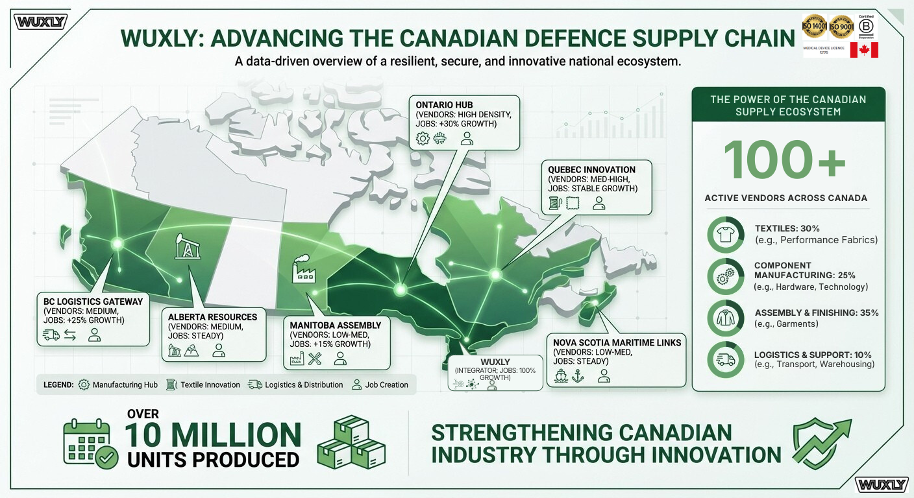

Supply Chain Overview
Wuxly: Strengthening Canadian Industry
Wuxly operates as a strategic integrator within Canada's defence supply chain, coordinating over 100 active vendors across the nation's manufacturing ecosystem. Our distributed network spans multiple provinces and regions, creating a resilient, secure, and innovative national manufacturing capability.
